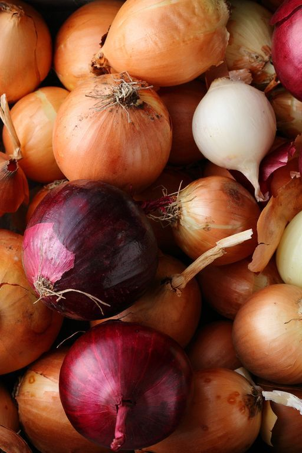

Carrots are full of phytochemicals such as beta-carotene that your body converts to vitamin A, which helps with vision — especially at night.
2022– Available @$11
Eggplants contain fiber and are low in calories — they can contribute to a healthful, low-calorie diet.
However, eggplant can absorb a lot of oil during frying. Anyone looking to lose weight should prepare it a different way, such as by grilling or air-frying it.
2022– Available @$10
Mashroom are technically fungi, but they can help with cognition, heart health, and disease prevention. Rich in B vitamins, swap 'em in as a replacement for meat, or enjoy them grilled, sauteed or steamed
2022– Available @$15

Onions are a nutrient-dense food, meaning that they are high in vitamins, minerals, and antioxidants while being low in calories.As a good source of vitamin C, onions may support the building and maintenance of collagen.
2022– Available @$21
Sweet potatoes are one of the best sources of beta-carotene, which is an antioxidant that converts into vitamin A. This complex carbohydrate may seem too good to be true, but a baked orange spud loaded with black beans, feta, herbs, and roasted peppers is one of the easiest and nutrient-dense dinners you can have.
2022 – Available @$32

Green beans are a good source of vitamin A, vitamin C, vitamin K, fiber and they get their bright green color from the antioxidant chlorophyll.
2022–Available@$16

Cauliflower is an easy way to sneak in extra vitamin C (one cup contains almost 100% of your daily recommended amount!), vitamin K, potassium, vitamin B6, folate and plant-based omega-3’s to your meal.
2022– Available @$14
Tomatoes contain lycopene, which give the salad staple its rosy red color. Research has shown that lycopene supports vascular health and helps prevent cardiovascular disease.
2022-Available @$13
Asparagus is Rich in antioxidants, asparagus is a natural diuretic and as a prebiotic it feeds healthy gut bacteria. Whether you enjoy asparagus roasted or sauteed, grab a bunch the next time you're at the grocery store. The stalks contain only a few calories but lots of fiber and micronutrients such as folate, vitamin C, vitamin A, and vitamin K.
2022-Available @$17

This leafy green Spinach is one of the most versatile vegetables, eat it raw tossed in a salad, sautéd, steamed or throw it in a smoothie as a neutral way to boost your green intake. One cup contains your entire daily requirement of Vitamin K and it has tons of vitamin A (over half of the recommended daily amount in a serving!), and vitamin C which helps boost and enhance your immune system
2022-Available @$19
Turnips:This root vegetable is part of the cruciferous family (related to kale, broccoli and Brussels sprouts), is low in calories and rich in fiber and micronutrients including calcium, phosphorus, and potassium.
2022-Available @$47

Your favorite leafy green Kale is positively chock-full of vitamin K — just ½ cup provides about 440% of the recommended daily value! Another fun fact: A serving of kale also supplies 10% of your daily value for calcium — good to know if you’re lactose intolerant.
2022-Available @$23